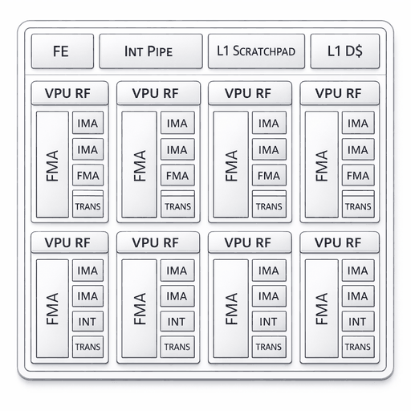

Erbium Minion

ET-Minion core (source: aifoundry-org/erbium, Apache-2.0).
The Erbium CPU subsystem is one ET-Neighborhood of eight dual-threaded
RV64IMFC ET-Minion cores (16 harts), derived from the Esperanto ET-SoC-1,
together with a PLIC, a CLINT-style machine timer and a shared instruction
cache. Erbium silicon is not yet available, so this board targets the
erbium_emu system emulator. NuttX runs on hart 0.
Memory and interrupts
The ELF loader reserves the first 512 bytes of the 16 MiB MRAM window.
NuttX therefore starts at 0x40000200. Initialized data is loaded at its
execution address. Startup clears BSS and places the heap after the idle
stack. The linker checks that the image and idle stack fit in MRAM.
The PLIC at 0xa0000000 provides sources 1 through 6; UART0 uses source
3. Receive and transmit use interrupts, without periodic polling.
The machine timer uses mtime at 0x80f40200 and mtimecmp at
0x80f40208. CONFIG_ERBIUM_MTIMER_FREQ defaults to 2 MHz, the
emulator’s timer rate. The Erbium documentation specifies a 10 MHz
mtime (one tick every 100 ns) on silicon, so set this option to match
the target.
Toolchain
Use a GNU RISC-V bare-metal toolchain with RV64 single-precision ABI
support, such as riscv64-unknown-elf-gcc. The normal RISC-V toolchain
logic derives rv64imfc_zicsr_zifencei and lp64f from Kconfig.
Erbium handles floating-point divide and square root through microcode.
This standalone image does not supply that microcode, so the port uses
-mno-fdiv to generate software helper calls for those operations.
Other single-precision instructions and FPU context switching remain
enabled, including the FPU portion of ostest. Double-precision
arithmetic uses software. The atomic instruction extension is not enabled.
NuttX provides atomic operations through interrupt masking on hart 0.
Startup also avoids the microcode-dependent FENCE.I instruction; this
port expects the emulator’s ELF loader to install the executable image.
NuttX’s dynamic ELF module loader is disabled in both configurations because
its instruction-cache synchronization also uses FENCE.I. This does not
affect the nuttx ELF output file loaded by the emulator.
Configurations
nsh provides the NuttShell console and procfs. ostest starts the
NuttX OS test application automatically. Both configurations run on hart 0.
With sibling nuttx and apps checkouts, build using Make:
cd nuttx
./tools/configure.sh -l minion:nsh
make -j8
To select the OS tests, start from a clean configuration:
make distclean
./tools/configure.sh -l minion:ostest
make -j8
From the directory containing the sibling nuttx and apps checkouts,
CMake is also supported:
# Run make distclean first if nuttx was configured with Make.
cmake -S nuttx -B build -GNinja -DBOARD_CONFIG=minion:nsh
cmake --build build
Build the emulator
The public ET-platform revision
836a4ab600e93c3059bb58c898edbc37744cd8d0 has been tested with this port.
No local emulator patches are required. Build only the header-only Erbium
HAL package and the native emulator; the accelerator firmware and ET
cross-toolchain are not needed. The host requires CMake 3.21 or later,
Ninja, a C++17 compiler, and the glog and LZ4 development packages:
git clone https://github.com/aifoundry-org/et-platform.git
git -C et-platform checkout 836a4ab600e93c3059bb58c898edbc37744cd8d0
cmake -S et-platform/erbium-hal -B hal-build \
-DCMAKE_INSTALL_PREFIX="$PWD/emu-prefix"
cmake --install hal-build
cmake -S et-platform/sw-sysemu -B emu-build -GNinja \
-DCMAKE_BUILD_TYPE=Release -DCMAKE_PREFIX_PATH="$PWD/emu-prefix" \
-DCMAKE_CXX_FLAGS=-Wno-error=unused-result
cmake --build emu-build --target erbium_emu
The last compiler option keeps an existing ignored write() return value
in the emulator UART implementation from becoming a build error with GCC
13. It does not modify the emulator source. The executable is
emu-build/erbium_emu.
Run in the emulator
Use an emulator with Erbium PLIC PMA access, clocked UART FIFO/interrupts, and timer advancement while the core is in WFI. Older emulator builds without those features are not supported.
Start an interactive console with:
erbium_emu -elf_load nuttx -reset_pc 0x40000200 -single_thread \
-max_cycles 100000000000
The same command runs the ostest image without console input. Allow
enough simulated cycles for the tests’ sleeps and timeouts; reaching the
emulator cycle limit is not a successful test result. A complete run prints
Final memory usage: followed by user_main: Exiting and
ostest_main: Exiting with status 0. Inspect the entire log for failures
and assertions as well.
The board includes an automated runner that accepts prebuilt ELF files:
python3 boards/risc-v/erbium/minion/tools/test_emu.py \
--emu /path/to/erbium_emu --elf nuttx --mode ostest --output logs/ostest
For an nsh image, select --mode nsh. This checks console commands,
procfs, uptime advancement during sleep and receive interrupts after idle.
Add --extra-harts
to start four harts and exercise secondary-hart parking. The runner fills
uninitialized emulator memory with a nonzero pattern and records the UART
log, emulator log, binary checksums and result JSON. It stops the emulator
after the required completion markers; a timeout or cycle-limit exit before
completion fails the test. A Release build of the emulator is recommended
for the complete OS tests, which contain many simulated sleeps.
UART settings
UART0 supports 8-bit characters, no parity and one stop bit (8N1), using
CONFIG_UART0_BAUD and the standard serial buffer size options. Other
line formats are rejected at build time. CONFIG_ERBIUM_UART_CLOCK
describes the peripheral clock
after the system divider. The emulator defaults correspond to a 200 MHz
system clock divided by 30. Runtime termios reconfiguration and hardware
flow control are not implemented. CONFIG_SUPPRESS_UART_CONFIG preserves
a bootloader’s UART configuration; it must remain disabled for direct ELF
loading into a reset emulator. CONFIG_SUPPRESS_SERIAL_INTS is honored
for low-level console debugging.
The emulator reads host input into its finite RX FIFO immediately. Feeding a long command through a pipe can overrun that FIFO. Automated console tests should pace input, for example by waiting for each echoed character.